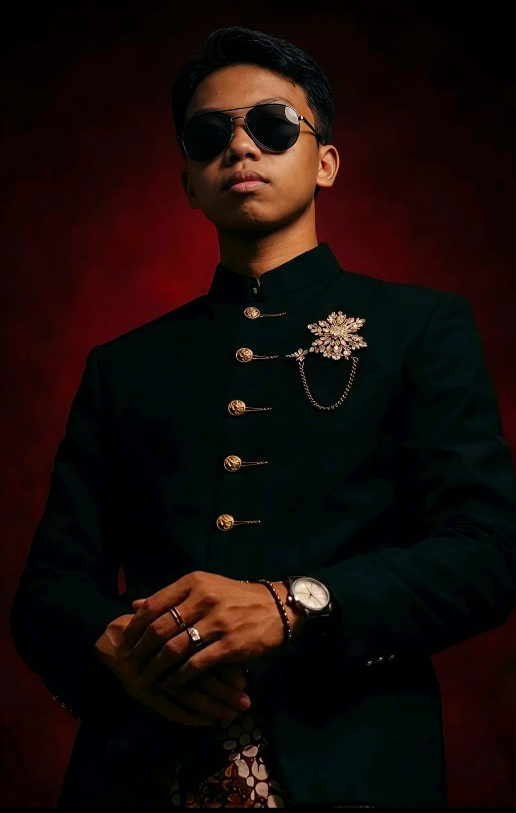
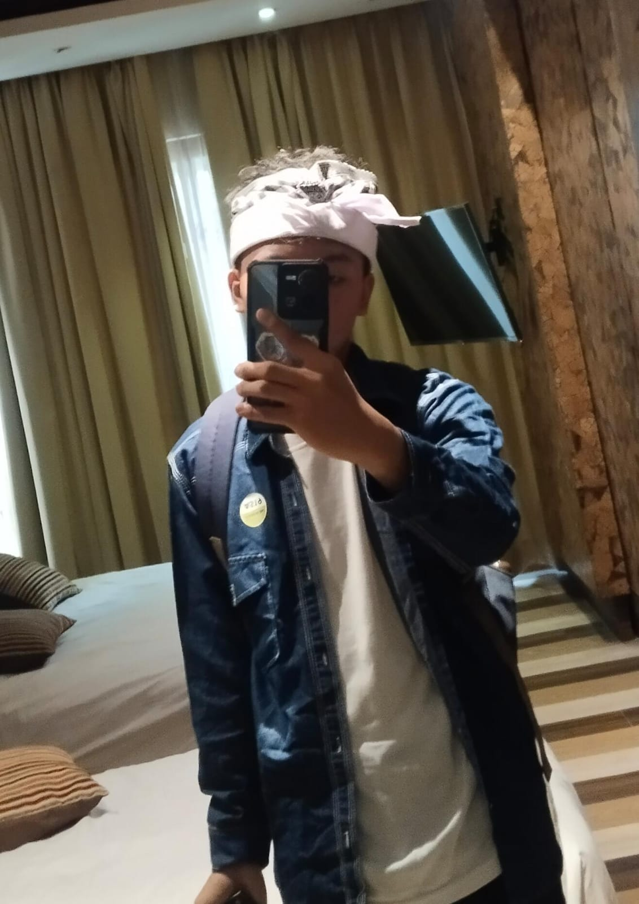
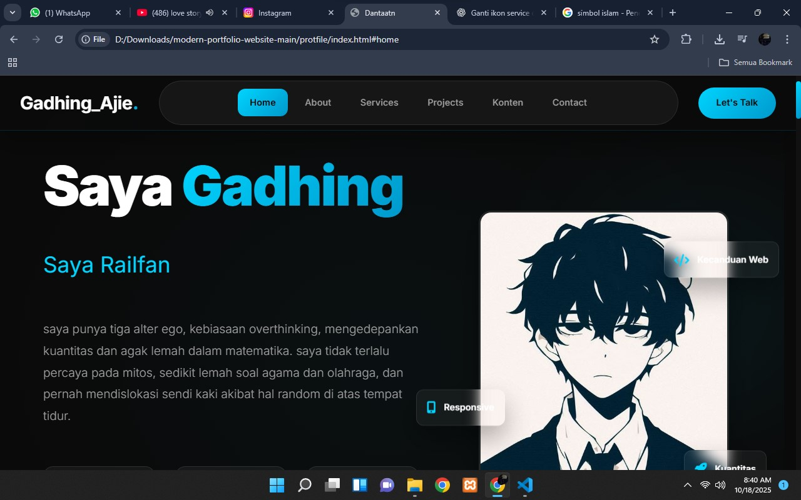

Saya Aji Nugraha
Web Developer
saya punya tiga alter ego, kebiasaan overthinking, mengedepankan kuantitas dan agak lemah dalam matematika. saya tidak terlalu percaya pada mitos, sedikit lemah soal agama dan olahraga, dan pernah mendislokasi sendi kaki akibat hal random di atas tempat tidur.


Pengalaman Web
Tentangku
Nama saya Gadhing Aji Tirta Nugraha. Saya orang yang peduli, ramah, dan praktis, yang menikmati hal-hal sederhana namun teratur. Keteraturan bagi saya membawa rasa tenang dan fokus, membuat hidup terasa lebih seimbang dan menyenangkan meski dalam kesederhanaan.
Saya berusaha menjadi sosok yang bisa diandalkan, meski terkadang terlihat diam atau melamun. Sebenarnya, saya hanya terlalu tenggelam dalam pikiran, sering memikirkan hal-hal kecil secara mendalam. Kalau saya tampak cuek, itu hanya bagian dari alter ego. saya sadar kok, bukan karena saya tidak peduli, ya emang itu saya.
Meskipun begitu Saya tidak menyukai hal hal yang bersifat ndadak dan ketidakpastian karena itu akan membuatku overthinking setengah mati. saya sering begadang sampai dini hari karena enak saja suasananya.
Edukasi
Computer Science, Web, Ekonomi, Sejarah
Alamat
Jalan Jaksa Agung Suprapto 1, Kauman, Nganjuk, Jawa Timur
Pengalaman
7+ Bulan Html & Css Web, 3+ Tahun konten Kreator.
Apa yang Saya Kerjakan?
Web Development
Sekalinya saya niat karena hobi (bukan paksaan) suatu hal saya tidak bisa lepas dari project itu dan akan kuslesaikan dan kudesain sesuka saya.
Sahabat Ponsel
Tiap hari liat HP scroll IG,Youtube,Threads baik untuk liat informasi terbaru,kontent,ataupun hanya sekedar hiburan
Trainz Design
Content Creator desain game Trainz yang sering saya lakukan baik untuk diri saya sendiri maupun untuk saya bagikan ke orang lain.
Peforma Kuantitas
Saya meningkatkan apa yang sudah melekat pada saya tentang kuantitas baik dari dalam maupun dari luar serta efisien dan cepat walaupun pasti terkendala itu tidak masalah
Musik
Hobi mendengarkan musik saat mengerjakan project atau sesuatu, selain menambah suasana juga tidak membuat ngantuk dan tetap bisa fokus
Sesuatu yang produktif
Jikalau memang tidak ada apa apa yang bisa saya kerjakan, saya akan mulai produktif. terutama untuk cara bagaimana mempermudah kehidupan sehari hari memnggunakan kreatifitas dan alat alat yang tersedia.
Tujuan Masa Mendatang
Gold
Fokus kekayaan, hasil usaha terutama untuk menghadapi tantangan finansial dan kemandirian. siapa coba yang tidak mau kemudahan. jika uang sudah berkata maka akan terlaksana.

Glory
Kejayaan, terutama kejayaan karir berusaha menjadi sosok yang bisa diandalkan, berwibawa, dan sukses. dan dikenal banyak orang dengan relasi yang luas. juga sebagai pencapaian saya.

Gospel
Mengingat saya kurang dalam hal agama dan spiritual, saya akan menambah pengalaman pengalaman terhadap hal tersebut yang memberikan kosmos makna yang membuat hidup manusia terasa teratur dan bermakna.

Pengembangan Infomatika
Memaksimalkan potensi yang ada, toh juga saya tidak jago matematika, olahraga dan agama maka saya mengejar apa yang sudah saya pelajari dan kusasai

Desain Konten
Sesuai kesukaan saya, terlebih sudah 3+ tahun menjelma sebagai content creator newbie yang masih mencari pengalaman yang bisa saya kembangkan dan bermanfaat bagi diri sendiri maupun orang lain

KAI Atau Content Creator
Bekerja di KAI memang impianku sejak kecil, tidak mudah memang untuk bisa diterima selagi yakin pasti bisa. juga dengan skill yang ada bisa saya gadengkan dengan hal hal lain seperti fotografi, kontent, dll